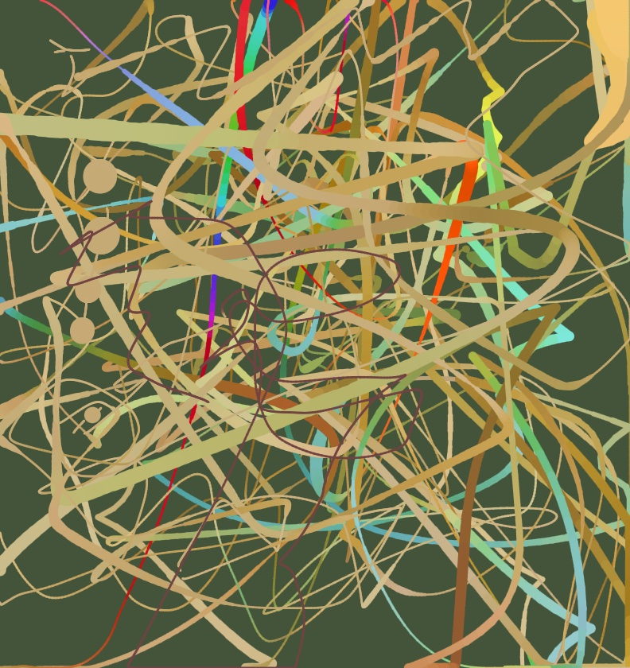

A walk through the sensors hidden inside every smartphone, and what you can build with them in plain HTML — no apps, no installs, no servers.
Your phone is dense with sensors. Cameras and microphones, of course, but also accelerometers, gyroscopes, magnetometers, ambient light sensors, GPS, Bluetooth radios. Most of them are accessible from a web page — a single HTML file, no app store involved. I built a series of small demos to see how far you can get with just <canvas>, the Web APIs, and a couple hundred lines of JavaScript each.
Each demo is one self-contained file. Open it on your phone over HTTPS, grant the permission it asks for, watch the sensor become a thing you can see, hear, or play with.
The microphone gives you a stream of floating-point samples between -1 and 1, sixty thousand of them per second. That's it. Everything you do with audio — voice recognition, music, transcription — is something built on top of those numbers.
The first demo, Morse Listener, listens for tones and decodes them. The whole pipeline is: read RMS volume of the audio buffer; if it's above a threshold, you're hearing a tone; if it lasts a short time, that's a dot; longer, a dash; pauses become letter and word breaks.
The fiddly part isn't the audio API. It's that real Morse practice files (like the ones from ARRL) use Farnsworth timing — the dots are sent fast but the gaps are stretched, to give beginners more time to think. A naive decoder treats the long gaps as word breaks and produces garbage. The fix is to detect timing adaptively: take the shortest pulse you've seen as your "dot" reference, and let everything else key off it.
You can grab a frame from <video> into a canvas and read individual pixel values. Morse Vision uses this to read Morse code from a flashing light: tap a small region of the frame, sample its brightness, and feed those samples through the same decoder as the audio version.
The hard problem here was thresholding. A flashlight against a dark wall has wildly different brightness levels than a phone screen against a bright room. So instead of a fixed threshold, the page tracks recent brightness percentiles: 10th and 90th. The threshold sits at the midpoint between them. The "on" level adjusts to whatever you're pointing at.
For richer scene understanding, Object Vision loads COCO-SSD via TensorFlow.js — about a 5 MB MobileNet that recognizes 80 common COCO classes. It runs three times a second on a phone via WebGL. Drawing labeled boxes on a transparent overlay canvas synced to the video gives you what feels like augmented reality, in a single HTML file. Count Vision adds a tally that increments only when an object newly appears, so a stationary chair doesn't run the count to a million.
The phone's IMU returns three numbers for orientation (roll, pitch, yaw) and three for acceleration in each axis, at about 60 Hz. Inertial Etch turns this into an Etch-A-Sketch: tilt the phone like a tray and a pen moves across the canvas, with velocity proportional to tilt angle.
The catch with sensor APIs on iOS is that they require permission via a single user gesture, and the permission API is different from the standard Web API. So you call DeviceOrientationEvent.requestPermission() if it exists, fall back to just attaching the listener if it doesn't. iOS also reports orientation differently in landscape mode, so portrait-only is the simplest constraint to design for.
If you can detect a step from acceleration peaks (which you can, with hysteresis and a refractory period), and you have compass heading, you can do pedestrian dead reckoning: estimate position by integrating step direction over time. Inertial Blueprint uses this to map a room. Stand at a corner, drop a marker, walk to the next corner, drop another. The result is a floor plan drawn in browser SVG. It drifts — usually 10-20% over a single room — but it works in a building with no GPS and no external reference. A web page mapping a room with no app installed felt like the kind of thing that shouldn't be possible.
The magnetometer reports the local magnetic field in microteslas, three axes, about 60 Hz. Earth's field is 25-65 μT depending on latitude. That's the baseline. Anything that perturbs it — a magnet, a motor, a piece of steel rebar — shows up as an oscillation on top.
Magnetometer Waterfall takes a sliding 128-sample FFT of the total field magnitude (DC removed, Hann windowed) and renders it as a spectrogram. Walking past a fridge produces a slow ramp. A spinning hard drive makes a horizontal line at the rotor frequency. Waving a magnet shows up as a streak. The phone is doing real signal processing on physical-world data, in the browser, with no library.
The list of "phone has it but the web can't reach it" is instructive — every gap is a deliberate decision about privacy.
| Sensor | Web access? | Why not |
|---|---|---|
| WiFi scan list | No | Strong location fingerprint |
| Cell tower / signal strength | No | Even more precise location |
| Barometer (pressure) | No | No API exposes it, somehow |
| Heart rate / SpO2 | No | Health data, native only |
| LiDAR depth (iPhone Pro) | No | Not exposed |
| Fingerprint / Face ID | Auth only | WebAuthn, no raw biometrics |
| Bluetooth Low Energy | Yes (not iOS) | One device at a time, via chooser |
| Magnetometer raw | Yes (Chrome) | Behind permission prompt |
| GPS | Yes | Standard geolocation API |
| Camera / Mic | Yes | Per-origin permission |
Bluetooth Reader is the most "I can't believe this works in a browser" demo. Tap connect, the browser shows a system chooser of nearby BLE devices, you pick one, and the page walks its GATT service tree, reads characteristics, and subscribes to notifications. With a fitness band you get live heart rate. With a Govee thermometer puck you get temperature and humidity. With an ESP32 you get whatever you advertised. iOS Safari refuses to support it, citing security; on Android Chrome it's been stable for years.
The web doesn't expose WiFi or cell signal, and that's not a bug. Connection Health is the legit substitute: it pings a Cloudflare endpoint every few seconds, runs periodic speed tests, charts RTT and download speed over time, and exports the data. You can't read your radio, but you can measure the actual experience your radio produces. Catches flaky WiFi just as well as native tools, with the bonus that it's a URL you can send anyone.
Once you have all the sensors hooked up, it's tempting to use them all at once. Sensor Etch is the "everything painting" version of the Etch-A-Sketch: tilt moves the pen; mic volume sets the brush size; the camera's average color becomes the ink color; download speed tints the background; and the accelerometer triggers percussion sounds while pen position drives a synthesized violin tone, snapped to a pentatonic scale. Walking around with the phone produces a painting with a soundtrack composed by the room you're in.
That sounds gimmicky written down, and maybe it is. But the experience of standing in a kitchen, painting a yellow stripe because the camera saw a banana, while the violin pitches up because you tilted the phone, while drum hits land in time with your footsteps — that's something that genuinely couldn't exist five years ago, and it's a 30 KB HTML file.
Yes. Each page runs entirely in the recipient's browser. There's no server logging. Camera and microphone permissions are granted per-origin (per-domain) by the user via a system dialog, and browsers show indicator icons whenever they're active. The pages are open source — anyone can read all the code with view-source: in front of the URL.
The only practical caution: host them on a clean static site (GitHub Pages, Netlify, Cloudflare Pages) rather than on a domain that also serves third-party scripts you don't control, since those scripts would inherit the same-origin permissions. For typical personal-site hosting: nothing to worry about.
For most of computing's history, doing something interesting with a sensor required an app, an SDK, app store review, signing, distribution. Now most of it requires an HTML file you can email someone. The browser team-by-team did the hard work — making sensors reachable, making permissions clear, making the boundaries of what a page can do legible — and the result is a development environment that is, for a surprising amount of physical-world tinkering, the best one we have.
None of these demos are products. They're sketches. The point is that the things you'd need to write a serious app for in 2015 — object detection, room mapping, BLE scanning, real-time audio analysis — now fit in a single file you can debug in DevTools.
The web platform got really good while no one was looking.
If you build something with these or fork the demos, I'd love to see it.
All ten demos are single HTML files. tautme repo. MIT licensed. Each file is self-contained — no build step, no bundler, no framework. Open in a browser, read the source, change a line, refresh.
git clone https://github.com/tautme/phone-sensors.git cd phone-sensors python3 -m http.server # open http://localhost:8000 on your phone (same WiFi)
Sensor APIs require https:// or localhost. For phone access over local network use a tool like ngrok or just deploy to GitHub Pages — it's free and HTTPS by default.